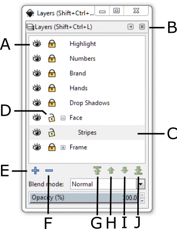
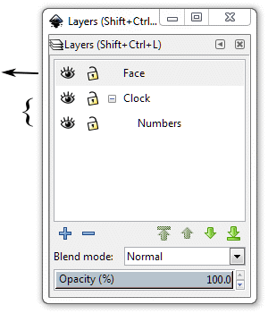
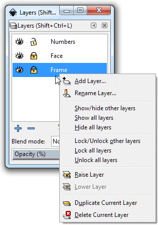
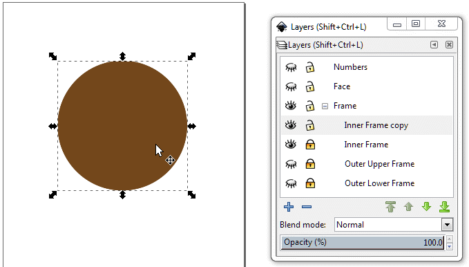
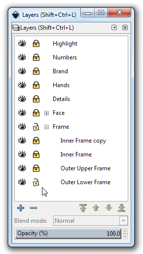
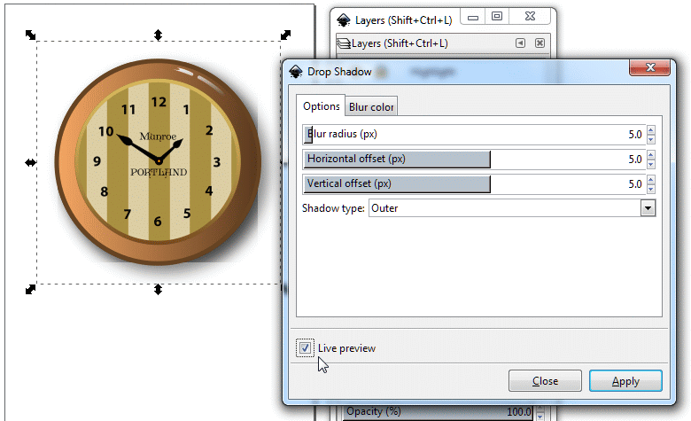

Layers let you organize your work into distinct levels that can be edited and viewed as individual units. Every Inkscape
document contains at least one layer. Creating multiple layers in your artwork lets you easily control how artwork
is printed, displayed, and edited.
In this tutorial, you'll learn how to do the following:
Work with the Layers palette.
Create and name new layers and sublayers.
Move layers and sublayers to change their position in the layer stack.
Move objects between layers.
Lock layers to prevent editing.
Hide layers to make viewing and editing easier, and redisplay them.
Paste objects from another file into your artwork.
Create clipping masks to control how artwork is hidden or revealed.
Add an appearance attribute to a layer.
Getting Started
In this lesson, you'll finish the artwork of a wall clock as you explore the various ways to use the Layers palette. Before you begin, you will open the finished art file for this lesson to see what you'll create.
Start Inkscape.
Choose File > Open, and open the Tutorial06End.svg file in the Lesson06 folder, located inside the
Lessons folder within the AICIB folder on your hard drive. Finished artwork.
Separate layers are used for the objects that make up the clock's frame, striped clock face, hands, and numbers — as indicated by their layer names in the Layers palette.
Eye icon (Hide/Show).
Layers palette menu bar.
Current layer indicator.
Edit column (Lock/Unlock).
Create a new layer.
Delete the current layer in the stacking order.
Raise the current layer to the top.
Raise the current layer.
Lower the current layer in the stacking order.
Lower the current layer to the bottom.

Layers palette.
If you like, you may leave the file open as a visual reference. Do this by reducing the
size of your window, then select View > Fit in Window. If you don't want to leave the image open,
choose File > Close.
To begin working, you'll open an existing file.
Choose File > Open, and open the Tutorial06Start.svg file in the Tutorial06 folder. The artwork contains some of the basic objects for the clock illustration.
Choose File > Save As, name the file Clock.svg, and select the Tutorial06 folder.
Creating Layers
Every document in Inkscape contains one layer by default. You can rename the layer and add more layers
at any time as you create the artwork. Placing objects on separate layers lets you easily select and edit
them by their organization. For example, by placing type on a separate layer, you can change the type all
at once without affecting the rest of the artwork.
You'll change the layer name to "Clock," and then you'll create another layer.
If the Layers palette isn't visible on-screen, choose Layer > Layers to display it. Alternatively,
you can click on the View Layers icon () in the Commands Bar.
Layer 1 (the default name for the first layer) is highlighted, indicating that it is active. Layer 1 is highlighted
In the Layers palette, double-click the layer name to highlight it. Type
Clock in the text box, and then press <Enter> to set the new name. Double-click on the Layer 1 name to highlight it.Layer 1 renamed to Clock.
Now you'll create a sublayer for the clock numbers.
Choose Layer > Add Layer... You can also right-click on the Clock layer bar in the Layers palette. The
Layers short-cut menu appears.
Click on Add Layer... The Add Layer Dialog box appears. The Layer name is Clock 1.
It is highlighted, which means that you can edit it. Change the Layer name to Numbers.
Click on the down selector arrow () in the Position selection box and select As sublayer of current (as a
sublayer of the current active layer).
Click the Add button to create the Numbers layer as a sublayer to Clock.
Layers short-cut menuChoose Position: As a sublayer of currentNumbers sublayer – note the indentation
to show that Numbers is a sublayer of the layer above it.
Moving Objects and Layers
By rearranging the layers in the Layers palette, you can reorder layered objects in your artwork.
You can also move selected objects from one layer or sublayer to another.
First, you'll move the clock numbers onto their own sublayer.
With the Select tool (),
click on the numeral 1 on the clock face to select it. Select the numeral 1.
Choose Layer > Move Selection to Layer Below. The Numbers layer bar in the Layers palette
is highlighted, indicating that it is now the active layer and that the numeral 1 is now located on
the Numbers layer. Move the numeral 2 to the Numbers sublayer.
Click on the numeral 2 on the clock face. The numeral 2 is now selected and the Clock layer
is highlighted, indicating that you have moved off the Numbers layer and onto the Clock layer,
where numeral 2 is actually located. Select the numeral 2.
Again, choose Layer > Move Selection to Layer Below. The Numbers layer bar in the Layers palette
is highlighted again. The numeral 2 is now on the Numbers layer.
Select numeral 3, but this time, press the hot-key combination <Shift>-<Page Down> to
make the Numbers layer active and add the 3 onto this layer. Repeat this step for numbers 4,
5, and 6.
For numerals 7 through 12, move them to the Numbers layer as a group by
<Shift>-clicking on them (see Tutorial 2, Using the Select Tool), and then pressing
<Shift>-<Page Down>. Select numerals 7 to 12.
Choose Edit > Deselect. Then choose File > Save.
Now you'll move the face of the clock to a new layer to use later when you add the stripes, hands,
and brand name of the clock, and you'll rename the Clock layer to reflect the new organization
of the artwork.
Click on the Clock layer bar to highlight it. Then click on the boxed minus sign ()to collapse
the Numbers layer bar underneath. This will help simplify your work. We will add the new layer
above Clock. Click on the Clock layer bar to highlight it.Collapse the Numbers layer bar.
Note how the boxed plus sign becomes a boxed plus sign, indicating that the Clock layer
contains a sublayer which becomes visible when you click on the plus sign.
Add a new layer by clicking on the plus sign icon () on the bottom left of the Layers palette. Label the new layer Face.
Create a new layer by clicking on the plus sign icon.Label the new layer Face.
Click on the Add button. The Face layer is added above the Clock layer and becomes
active. The new layer Face is added above the Clock layer.
In the artwork, click behind the numbers to select the clock face. Notice that the Clock
layer bar is highlighted, signaling that it is now the active layer. Select the clock face.
Press <Shift>-<Page Up> to make the Face layer active and have it contain the clock's
face. The Face layer now contains the clock face object.
Deselect the clock face by clicking anywhere off the face.
What we have done now is put the clock face over the numbers so we can't see them.
It is as if we pulled a sheet of tracing paper with the face circle drawn on it out of a stack of
tracing paper sheets, each sheet having a drawing of the clock frame, clock face,
and numbers, and put the face drawing on the very top of the stack, covering up the numbers.
We will now relocate the numbers so that they are on top of the clock face.
Moving a Sublayer
The numbers for the hours are covered over now by the image of the clock face. The clock face is topmost in the
stack of layers that make up the artwork. The numbers that represent the hours are on the Numbers sublayer. This
sublayer is subordinate to the Clock layer.
Layer decomposition

Click on the Numbers sublayer bar and drag it up until you see the Placement line appear above
the Face layer. Release the mouse button. Drag the Numbers sublayer up until the Placement line
appears above the Face layer bar.
You will see the Move Indicator () as you drag the bar.
Release the mouse button. The Numbers bar settles into place above the Face layer bar and
the numbers appear on the artwork on the clock face. The Numbers layer bar is topmost in the layers list and
numbers appear on the artwork.
Double-click the Clock layer to highlight the layer name. Change the layer name to Frame
and press <Enter> to set the name.
Choose Edit > Deselect to deselect all active objects, and then choose File > Save.
Locking Layers
As you edit objects on a layer, use the Layers palette to lock other layers and prevent selecting
or changing the rest of the artwork.
Now you'll lock all the layers except the Numbers layer so that you can easily edit the clock
numbers without affecting objects on other layers. Locked layers cannot be selected or edited in any way.
Click on the open padlock icon () in the Face and Frame layer bars to lock them. The closed padlock icon
() indicates that
a layer is locked. You cannot select it or make any changes to it. Locking the Face and Frame layers.
Now you'll change the type size and font of the numbers.
Press the <Ctrl>-A (case-insensitive) hot key pair to select all the numbers on the clock face.
Notice that only the numbers are selected. The clock face and frame are unaffected because they are
in layers that have been locked. Selecting all numbers on the clock face.
Click on the Text and Font icon () in the Commands menu bar. The Text and Font palette appears. Select the Font
tab if it isn't selected already. Select another font or size for the group of numbers.
(We used Myriad Pro Bold, size 28 points.)
Text and Font palette with the Myriad Pro Bold font 28 pt selected.
If you wish, use the Color palette or Swatches palette to change the color of the
selected numbers.
Click on the Apply button. The numbers change font and size. Numbers in Myriad Pro Bold 28 pt font.
Click on the Select tool () and then click anywhere away from the numbers to deselect them. Deselect numbers.
In the Layers palette, click the padlock icons in the Face and Frame layers
to unlock them.
Viewing Layers
The Layers palette lets you hide layers, sublayers, or individual objects from view.
When a layer is hidden, objects on that layer are also locked and cannot be selected or printed.
You can also use the Layers palette to display layers or objects in Outline mode, Grayscale
mode, or No Filters mode to view independently from other layers in the artwork.
Now you'll edit the frame on the clock, using gradient-painting techniques to create a three-dimensional
effect on the frame.
You will start by creating sublayers to the Frame layer that will contain individual parts of
the frame that you can modify without affecting other neighboring parts.
In the Layers palette, right-click the Frame layer to select it and bring up the
Layers short-cut menu.

Layers short-cut menu
Click on Show/hide other layers to hide the other layers. The Show/hide Layer
icons () on the
Face and Numbers layer bars are now closed (), indicating that those layers are hidden.
Hide the Face and Numbers layers. Only objects in the Frame
layer appear.
Using the Select tool (),
click on the locked padlock icon to the Frame layer to unlock it. Click on the plus sign icon
() on the bottom left of
the Layers palette. Select As sublayer of current from the drop-down selection box. Create a sublayer to the Frame layer.Sublayer to Frame layer created.
Select the outermost circle of the outer frame. Note that the Frame layer bar is highlighted. Select the outermost circle.
Press <Shift>-<Page Down> to highlight the Outer Lower Frame layer bar. The outermost
circle has now been added to the Outer Lower Frame layer bar. Note that it has changed to a
dark brown circle. The outermost circle is now in its own layer.
Click on the Open Eye icon ()
in the Outer Lower Frame layer bar to hide () the brown circle. Hide the outermost circle.
The bronze ring is the upper part of the outer frame that will help create a quasi-three-dimensional
effect using a gradient. You will isolate the bronze ring, which is actually a circle, by putting it into
its own layer.
Click on the plus sign icon ()
on the bottom left of the Layers palette. In the Position field, select Below current to make
a second sublayer. Change its name to Inner Lower Frame Create an Inner Lower Frame sublayer.
Click on the bronze ring. Note that the Frame layer bar is highlighted. Select the bronze ring.
Press <Shift>-<Page Down> twice to highlight the Inner Lower Frame sublayer. The
bronze ring, actually a bronze circle, now resides in the Inner Lower Frame sublayer.
The bronze ring (actually, bronze circle) is in its own sublayer.
Click on the Open Eye icon ()
in the Inner Lower Frame layer bar to hide () the bronze circle. Hide the bronze circle.
Finally, create a new sublayer to the Frame layer and name it Inner Frame. Select the
remaining medium-sized brown circle, press <Shift>-<Page Down> once to highlight the
Inner Frame layer bar, and click off the circle to deselect it. Put the last brown circle into its own sublayer.
Hide all the layers and then turn them on individually. See how each circle has its own layer that you can
control. Turn them off and on in different combinations. Finally, make them all visible. Make all layers visible.
Your result should be similar to the figure above. The bronze ring that make up the second outer circle isn't
there. It turns out that it is, but it's covered over the Outer Lower Frame circle. The bottommost two
sublayers are in opposite order. You will now move the Outer Upper Frame layer above the Outer
Lower Frame layer to make the bronze circle visible. It will be as if you interchanged two sheets of
tracing paper with drawings on them.
Click on the lowest layer bar (Outer Upper Frame) to highlight it. Then click on the
Raise current layer arrow () to reposition the layer above the Outer Lower Frame layer. Reposition the two bottommost sublayers.
With each circle in its own layer, you can now create gradients to achieve a quasi-three-dimensional
effect with your artwork.
Hide the Numbers and Face layers, and the Inner Frame sublayers. Lock the
Outer Lower Frame but keep it visible. Preparing to make a gradient.
If the Fill and Stroke palette isn't visible, then click on the Fill and Stroke icon
in the Commands menu bar () to bring it up. Select the bronze circle. If the Fill isn't selected in the Fill
and Stroke palette, select it. Click on the Linear gradient button. The bronze circle will
now show a color gradient changing from bronze to brown. Creating the first gradient.
Choose Edit > Deselect to deselect your artwork and choose File > Save.
The Select cursor turns into a Gradient control cursor (). Drag the square end of the line to the bottom of the circle.
Drag the circular end to the top to change the direction of the gradient from horizontal to vertical.
You will now create a second inner circle with its gradient changing in a vertical direction.
Click on the Closed Eye icon ()in the Inner Frame layer bar to make it visible, and click on the Open Eye
icon () in the Outer Upper Frame
and Outer Lower Frame sublayer bars to hide them. Make the Inner Frame circle visible and hide the two lower sublayers.
To create a gradient in the Inner Frame circle, you need to make a second circle that will contain
the semi-transparent gradient underlain by the dark brown circle. You will make a duplicate layer containing
a duplicate of the first circle.
Right-click on the Inner Frame layer and click on Duplicate Current Layer. Duplicate the current layer.Current layer duplicated.
The new layer is automatically named Inner Frame copy. It contains a similar dark brown circle, which is
positioned directly over the original circle in the original Inner Frame layer. You can test for
duplication by hiding the original Inner Frame sublayer and then hiding the Inner Frame copy
sublayer. The circle disappears only after you hide the duplicated layer.
Have both Inner Frame copy and Inner Frame sublayers visible. You need them to make the
gradient.
Lock the Inner Frame sublayer but keep it visible.
Click on the circle. The Inner Frame copy sublayer is highlighted.

Select the dark brown circle.
Bring up the Fill and Stroke palette, type the following hexadecimal code for a light
bronze into the RGBA field: b39a47ff. Press <Enter> to set the code.
RGBA means Red, Green, Blue, and Alpha channel.
The alpha channel controls an object's degree of transparency from 0% (totally transparent) to 100% (totally
opaque). Check the Stroke palette. There should be no stroke as shown by a message: Paint is
undefined.
Change the circle's color from dark brown to bronze.
You will now change the direction of the gradient from a horizontal change to a vertical change.
Click on the Linear gradient button in the Fill palette. The bronze circle now shows a
color gradient. Click on the linear gradient button in the Fill palette.
The gradient changes from left to right. You will now make the gradient change from bottom to top.
Click on the double arrow icon at the bottom of the toolbox. Clicking on the double arrow brings up more options.
Click on Gradient. A gradient guide line appears across the circle. The cursor also
changes into a Gradient Control cursor (). Gradient guide line.
Change the direction of the gradient by dragging the square marker to the top of the circle
and the circular marker to the bottom of the circle. Choose Edit > Deselect to deselect the
circle. Gradient is now vertical.Result.
Choose Edit > Deselect to deselect the artwork, and then choose File > Save.
In the Layers palette, right-click on any layer bar and select Show all layers from the
short-cut menu. Show all layers.
As you edit objects in layered artwork, you can hide individual layers, keeping the others in
Normal view. Click on the Show/hide Layer icon (Open Eye icon –
) on the Face
layer to hide that layer. Hide the Face layer.
Click on the Show/hide Layer icon (Closed Eye icon – ) in the Face
layer to return to Normal view for that layer. Face layer visible (Normal view).
Pasting Layers
To complete the clock, you'll copy and paste the finishing parts of artwork from another file.
You can paste layered files into another file and keep all the layers intact.
Choose File > Open, and open the
Details.svg file, located in the Tutorial 06 folder.
The font for the brand might look different on your computer than what you see in the example below. The font is
called Ametist. If this font is not installed on your computer and you want to use it, you can download it
here (Ametist) from the Tutorial06 folder and install it.
After installing the Ametist font, exit Inkscape if it is active, and then restart it so it
will "see" and include Ametist in its font library. Current Clock.svg artworkDetails.svgLayers palette for Details.svg
If you want to see how the objects are organized on the layers, right-click on any of the layers in the Layers
and select Show/hide other layers to alternately display each layer and hide the others. When you've finished, make sure that all the layers are showing and that they are unlocked.
If a layer is hidden, its objects are locked and cannot be selected or copied.
Choose Edit > Select All in All Layers and then Edit > Copy to select and copy the
clock details to the Clipboard.
Choose File > Close to close the Details.svg file. Do not save any changes if asked.
In the Clock.svg file, create a new layer between the Face and Numbers layers and name it
Details. Details is now the currently active layer. Create a Details layer.
Choose Edit > Paste in Place to paste the Details artwork into the Details layer. Paste the Details.svg artwork in place into the Clock artwork.
Now you'll move the highlight, brand, hands, and stripes into their own layers.
Choose the Select tool ()
and click away from the artwork to deselect it.
In the Layers palette, create a new layer Highlight above the Numbers layer. Create a new layer Highlight.
Click on the highlight in the artwork. The Details layer becomes the active layer.
Press <Shift>-<Page Up> twice to put the highlight into its own layer. Press <Shift>-<Page Up> twice. The highlight is now in its own layer.
Click anywhere off the highlight object to deselect it. Click on the Show/hide icon in
the Highlight layer to verify that the highlight object is indeed where it is supposed to be.
Click the Show/hide icon again to bring the highlight back into view.
Hide the highlight to verify that it is in its own layer.
Create new layers Brand, Hands, and Stripes between the Details and Face
layers. As you create new layers, you might need to lengthen the Layers palette to see all the layers. Create the Brand, Hands, and Stripes layers.
Click on the Munroe text and <Shift>-click on the PORTLAND text to group highlight them (see
Tutorial 2, Using the Select Tool, for review). The Details layer bar is highlighted in the Layers
palette. Press <Shift>-<Page up> three times to highlight the Brand layer bar. Click on the
Show/hide icon to verify that the brand text is in the Brand layer. Deselect the text in the
artwork. Group select the Brand text.
Repeat for the clock hands and background stripes, testing each time to make sure that they are in their
appropriate layers.
Choose File > Save to save the changes.
Creating Clipping Masks
The Layers palette lets you create clipping masks to control how artwork on a layer (or in a group)
is hidden or revealed. A clipping mask is an object or group of objects whose shape masks artwork below
it so that only artwork within the shape is visible.
Now you'll create a clipping mask with the circle shape in the Face layer. You'll group it with
the Stripes layer so that only the stripes show through the circle shape.
In the Layers palette, drag the Stripes layer so that it is located immediately
underneath the Face layer. If the Stripes layer ends up as a sublayer to the Face
layer, that is absolutely fine. The important thing is that the Face be immediately above
the Stripes layer. The Stripes layer has been put underneath the Face layer
(here, as a sublayer to Face).
A masking object must reside above the objects it will mask in the Layers palette. Since you
want to mask only the stripes, you'll move the circular Face object to above the Stripes
layer before you create the clipping mask.
In the Layers palette, right-click on the Face layer and choose Lock/Unlock Other layers
in the short-cut menu. All layers other than Face are now locked. Unlock the Stripes layer
by clicking on its Show/hide icon. The Face and Stripes layers are unlocked. All other layers are locked.
Both the masking object above and object to be masked below must be selected in order for clipping to happen.
Using the Select tool (),
marquee select the Stripes object and the Face object in the artwork. (See Tutorial 2,
Marquee Select, for review.) Select the Face and Stripes objects.
Choose Object > Clip > Set. The Stripes object is now clipped.Result.
Choose File > Save.
Applying Appearance Attributes to Layers
You can apply appearance attributes such as styles, effects, and transparency to layers, groups,
and objects with the Layers palette. When an appearance attribute is applied to a layer, any object
on that layer will take on that attribute. If an appearance attribute is applied only to a specific
object on a layer, it affects only that object, not the entire layer.
You will apply an effect to an object on a layer. Then you'll copy that effect to a layer to change
all objects on that layer.
In the Layers palette, collapse the Face layer and expand the Frame layer
to reveal all its objects.
Right-click on any layer bar and choose Lock all layers. Then, unlock the Frame
layer and Outer Lower Frame sublayer. You will apply an effect to the Outer Lower Frame sublayer.

Collapse and lock the Face layer, expand the Frame layer.
Unlock the Frame layer and Outer Lower Frame sublayer.
Select the bottom path in the Frame layer (Outer Lower Frame) and then
click on the artwork to select the bottommost circle in the artwork. Click on the artwork to select the bottommost circle.
Choose Filters > Shadows and Glows > Drop Shadow...
The Drop Shadow dialog box appears. Choose:
Blur radius (px): 5.0
Horizontal offset (px): 5.0
Vertical offset (px): 5.0
Shadow type: Outer
check the Live preview checkbox so you can see the immediate effect of the drop shadow.

Drop shadow.
The problem has been found in sublayer Inner Frame copy The blend setting is Screen
which mixes colors in different layers in a way that makes them darker. Drop shadow problem found in the Inner Frame copy sublayer.
From the Blend mode drop-down list, choose Normal. The second shadow disappears,
you have just fixed the problem. Note, however, that the light portion of the gradient in the inner
band of the frame is a little darker. That change is a small price to pay for eliminating a glaring
and possibly uncomfortable problem. Drop shadow problem fixed in the Inner Frame copy sublayer.
You will now add drop shadows to the clock hands and numbers. You will group the hands and numbers and
copy them into their own layer and use the blur feature to make shadows out of them, and reposition them all
as a group.
Rename the Details layer by double-clicking on the name and typing Drop Shadows. Press
<Enter> to set the name. This layer should already be located below the Numbers and
Hands layers. This position indicates that the drop shadow objects are indeed located underneath
the artwork's original numbers and hands, giving an illusion of depth.
Lock all the layers except for the Numbers, Hands, and Drop Shadow layers. Preparing for merging objects into one layer.
Marquee select the artwork and then press <Ctrl>-D to make a copy of the numbers and hands
as a group. Even though you made a group copy of these details, they as still individual objects. Choose
Object > Group to group the numbers and hands into one object. Marquee select the numbers and hands.Group the numbers and hands.
Press <Shift>-<Page Down> until the Drop Shadows layer is highlighted. At this point,
the grouped copies of the numbers and hands are located in the Drop Shadows layer. Move the grouped objects to the Drop Shadows layer.
Now lock the Numbers and Hands layers, but keep the Drop Shadows layer unlocked.
Open the Fill and Stroke palette. With the duplicated numbers and clock hands still selected,
set the Blur (%) feature to 2.0. Click off the artwork to set the blur and then reselect the
artwork for repositioning. Press the down arrow twice and the right arrow twice to offset the shadows'
positions to the lower right of their supposed shadow source. Set Blur (%) to 2.0.Offset the drop shadows to the lower right.
Choose Edit > Deselect.
Finished artwork.
Choose File > Save. Choose File > Close to close the file.
You have completed building a layered file.
In some cases after the artwork is complete, you may want to place all the layers of art onto
a single layer and delete the empty layers. This is called flattening artwork. Delivering finished
artwork in a single layer file can prevent accidents, such as hiding layers, and not printing parts
of the artwork, from happening.
Resource: For a complete list of shortcuts that you can use with the Layers palette,
see Help > Keys and Mouse Reference > Layers in the navigation list on the left side of the screen.
Review Questions
Name two benefits of using layrs when creating artwork.
How do you hide layers? Display individual layers?
Describe how to reorder layers in a file.
How can you lock layers?
How do you move objects from one layer to another?
How do you create a layer clipping mask?
How do you apply an effect to a layer?
Review answers
Benefits of using layers when creating artwork include: You can protect artwork that you don't
want to change, you can hide artwork that you aren't working with so that it's not distracting,
and you can control what prints.
To hide a layer, you click the eye icon The Open Eye
icons () to the left
of the layer name. To redisplay a layer, click the Closed Eye icon () to the left of the layer name.
You reorder layers by selecting a layer name in the Layers palette and dragging the layer
to its new location. You can also click on a layer to be moved to select it, and then click on the Up Arrow
() or Down Arrow
() at the bottom
of the Layers palette to move that layer up or down in the layer order. The order of layers in
the Layers palette controls the document's layer order – topmost in the palette is frontmost
in the artwork.
You can lock layers in a few different ways:
You can choose Lock All Layers from the Layers palette menu to lock all layers.
You can choose Lock Others from the Layers palette menu to lock all layers but
the active layer.
You can hide a layer to protect it.
Select the object you want to move. Press <Shift>-<Page Up> or <Shift>-<Page Down>
to highlight the layer bar of the destination layer.
Create a clipping mask on a layer by selecting the layer and then choosing Object > Clip > Set.
The topmost object in the layer will become the clipping mask.
Select the layer bar of the layer to which you want to apply an effect. Make sure that the layer is
visible () and unlocked
() so you can edit it.
Select all objects in the layer (you might need to do a marquee select) and then apply the desired effect.

{kind=link}
{kind=link}
 ),
click on the numeral 1 on the clock face to select it.
),
click on the numeral 1 on the clock face to select it.

 ), indicating that those layers are hidden.
), indicating that those layers are hidden.{kind=link}